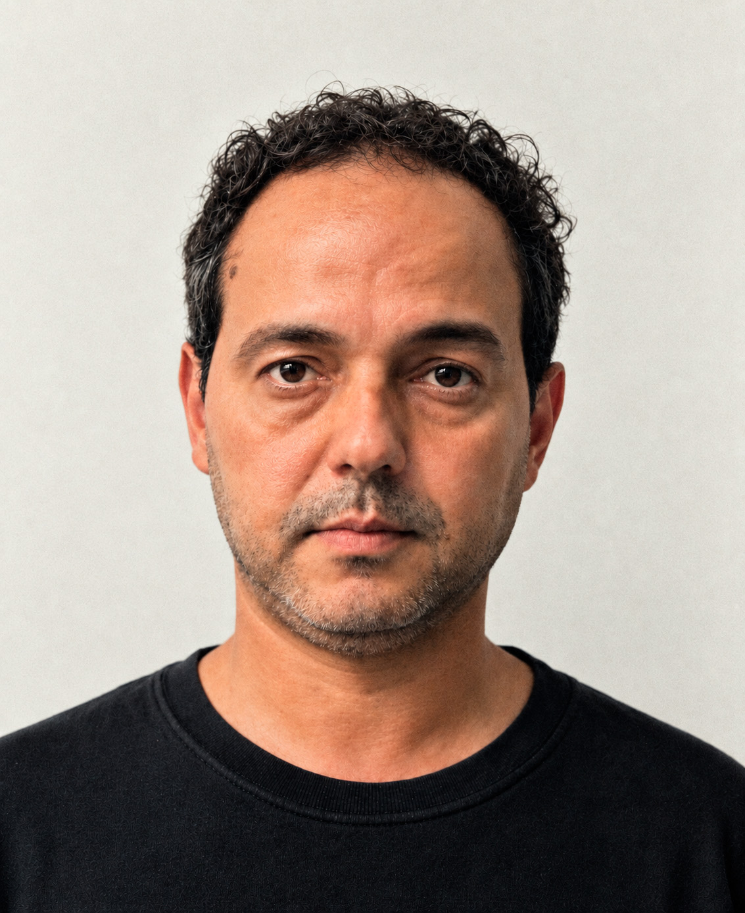

Oi,
Eu sou o Luiz.
Mas pode me chamar de Destri.
Carioca e curioso.
Atleta nas horas vagas.
Churrasqueiro e cervejeiro também.
Criativo em tempo integral.
Certa vez, no início da carreira, ouvi de um colega:
— “Propaganda é feita de dois B’s.”
— “Bagagem e bom-senso.”
Hoje, muitos anos depois, volta e meia eu lembro dessa dupla:
Bagagem e bom-senso.
Acho que esse é o maior barato do que eu faço: usar o meu ponto de vista
e as minhas experiências pra encher de ideias a próxima folha em branco.

ALGUNS CLIENTES
Coca-Cola Banco do Brasil Sebrae
Prefeitura de Curitiba Sesi Senai Fiep
Creamy Skincare MundoLivre FM
entre outros, nos mais variados setores.
ALGUNS LUGARES
Santiago Comunicação — Associate Creative Director / Copywriter (atual)
CCZ Comunicação — Creative Director / Copywriter
JWT / Casa — Senior Copywriter
Master Comunicação — Senior Copywriter
Bronx Comunicação — Associate Creative Director / Copywriter
TIF Comunicação — Associate Creative Director / Copywriter
ALGUNS BRINDES
Profissionais do Ano Rede Globo
Clube de Criação São Paulo
El Ojo de Iberoamerica
INMA NY - International News Media Association
Voto Popular
ANJ
Lürzer’s Archive
Clube de Criação Paraná
NACIONALIDADES
Brasileira
Italiana
IDIOMAS
Português nativo
Inglês fluente
Espanhol básico